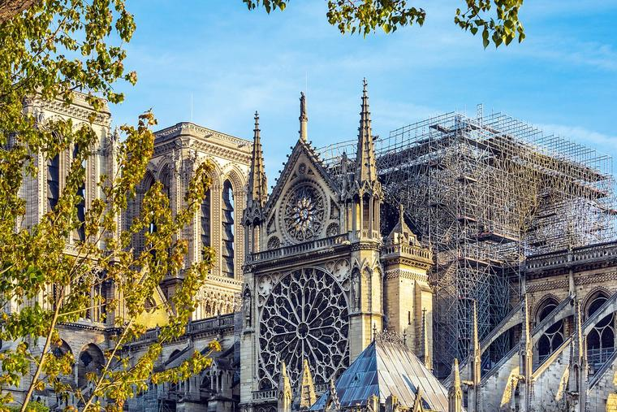

The colonial period in Spanish America and Brazil witnessed various revitalization movements among indigenous and African populations, often violently suppressed but never entirely quelled. These movements were responses to the profound disruptions caused by European colonization, including forced labor, cultural suppression, and the imposition of Catholicism. Indigenous peoples, facing the erosion of their traditional ways of life, often turned to religious and cultural revival as a form of resistance. These movements sought to restore pre-colonial social structures and belief systems, sometimes blending them with elements of Catholicism and African beliefs introduced through the transatlantic slave trade. This syncretism led to unique religious practices that combined indigenous, African, and European elements, reflecting both resistance and adaptation to the new colonial reality. By incorporating Christian elements into their traditional beliefs, indigenous peoples were able to preserve aspects of their ancestral religions. This syncretism was a subtle form of defiance, a way of maintaining a connection to their heritage in the face of overwhelming colonial pressure. The cult of the Virgin of Guadalupe in Mexico exemplifies religious syncretism. The Virgin became a symbol of Mexican identity, merging Catholic and indigenous beliefs. Her image was used by Miguel Hidalgo in the Mexican War of Independence, illustrating how syncretic religious symbols could be mobilized in anti-colonial struggles. In Brazil, the influence of African beliefs was particularly significant, given the large number of enslaved Africans brought to the region. The fusion of African religious traditions with indigenous and Catholic practices gave rise to new syncretic religions, Umbanda. These religions provided a spiritual refuge and a sense of identity for both enslaved Africans and indigenous peoples, helping them cope with the harsh realities of colonial life. However, these revitalization and syncretic movements often faced violent repression from colonial authorities, who viewed them as threats to their control and efforts to Christianize the populations. Despite this, the movements persisted, underscoring the resilience and creativity of the colonized peoples in preserving and adapting their cultural and religious heritage. The persistence of these movements and their ability to adapt and survive under oppressive conditions were remarkable. Indigenous leaders, shamans, and African priests played crucial roles in keeping these traditions alive, often at great personal risk. They became symbols of resistance and sources of hope for their communities, sustaining cultural continuity amidst the sweeping changes brought by colonization. The introduction of Catholicism, while initially forced, became part of this complex web of belief systems. Indigenous and African populations often incorporated Catholic saints and rituals into their practices, creating a unique religious landscape that was neither entirely Catholic nor purely indigenous or African, but a blend of all three traditions. Faced with the overwhelming forces of colonization, these communities found ways to retain their cultural identities, adapt to new realities, and resist cultural and spiritual eradication.
Catholic Rebellion & Reform
Attempted Revitalization Movements
In historical Spanish America, the act of religious subversion and flight by indigenous and African populations was fraught with risk. The colonial regime, seeking to impose the Catholic norm, often viewed any deviation from established religious practices as a threat to its authority. Bartolomé de Las Casas, a Dominican friar, stood out in this context for his efforts to advocate for the rights of indigenous peoples. Las Casas argued against the enslavement and harsh treatment of the native populations, promoting a vision of peaceful evangelization. His stance, however, was controversial and met with resistance from colonial settlers and authorities who benefited from the exploitation of native labor. Las Casas' advocacy highlighted the tension between the colonial imperative to assimilate indigenous populations and the realities of cultural resistance and survival.
Catholic Rebellion & Reform
Religious Subversion and Flight
Militant Roman Catholics' labeling of figures like Francis Drake, Piet Heyn, Iberian Jews, and Muslims as heretics reflects the intense religious polarization of the era. Heresy was seen not just as a theological error but as a societal contagion that threatened the integrity of the faithful. The presence of heretics, defined broadly to include anyone deviating from orthodox Catholic practice, was considered a form of pollution. This perspective led to severe consequences, including exile, torture, or death, for those labeled as heretics. The identification and reporting of heretical behavior often involved community surveillance, with neighbors reporting unusual practices like non-Catholic rituals or dietary habits.
Catholic Rebellion & Reform
Militant Roman Catholics
The Counter-Reformation and the ensuing Catholic Renaissance were significantly influenced by the Council of Trent's edicts. These meetings, held between 1545 and 1563, marked a conservative defense of medieval Catholicism, emphasizing sacraments, clerical celibacy, and the existence of purgatory. The Council also reinforced the veneration of Mary, the saints, and the role of relics in pilgrimage. Controversially, indulgences were expanded, sparking Protestant criticism. The Counter-Reformation's impact extended beyond Europe, influencing colonial societies, as seen in the actions of figures like Catalina Tuza, who aligned their religious practices and investments with the Council's edicts. The Counter-Reformation was a significant movement within the Catholic Church, initiated in response to the Protestant Reformation. This period was characterized by a reaffirmation of Catholic doctrines and the implementation of reforms to address abuses and corruption within the Church. The Council of Trent played a crucial role in this process, clarifying Catholic teachings and strengthening Church authority. The Counter-Reformation also emphasized missionary work, education, and the arts as means to revitalize the Church and counter Protestant influence. This movement had profound impacts on the religious, cultural, and political landscape of Europe and the colonies.
Catholic Rebellion & Reform
Counter Reformation of the Catholic Church
The experience of New Christians, particularly Portuguese families, under the Inquisition highlights the complex interplay of religion, ethnicity, and politics. These individuals, often of Jewish descent, faced intense scrutiny and persecution, accused of secretly practicing Judaism. The Inquisition's focus on these communities varied over time, with periods of intense prosecution and public spectacles. The reasons behind the Inquisition's fluctuating intensity remain a subject of historical debate. New Christians were often jailed, tortured, killed, and deprived of their estates. The experiences of New Christians, ranging from those who considered themselves devout Catholics to those openly defying the Inquisition, underscore the varied responses to religious persecution.
Catholic Rebellion & Reform
Portuguese New Christians
The Pueblo Revolt of 1680 in present-day New Mexico stands as one of the most successful acts of indigenous resistance. Led by a religious leader, Popé, the Pueblo peoples temporarily expelled the Spanish colonizers and reclaimed their religious and cultural autonomy. This revolt highlights the role of religion not only as a tool of oppression but also as a catalyst for resistance and liberation.
Catholic Rebellion & Reform
The Pueblo Revolt of 1680
The story of Diogo Henriques, a 26-year-old Spanish-born 'New Christian', illustrates the complex interplay between personal faith, societal norms, and institutional control in the context of Catholicism. His experience highlights the tension between genuine religious belief, societal pressure, and the punitive mechanisms of the Church. Henriques' journey through accusation, confession, and reconciliation reflects the broader dynamics of religious identity and conformity in a period marked by intense scrutiny of faith and practice.
Catholic Rebellion & Reform
Diogo Henriques, a ‘New Christian’
The Catholic Renaissance in Iberia and its colonies was significantly influenced by the Council of Trent (1545-1563). This pivotal event marked a conservative resurgence in Catholicism, emphasizing traditional practices and doctrines. Key aspects included the reaffirmation of sacraments, notably marriage and the priesthood's celibacy, along with the doctrine of purgatory. The Council's reinforcement of local Marian and saintly cults, alongside the central role of relics, bolstered pilgrimage and religious devotion. Controversially, it also expanded the practice of indulgences, a point of contention with Protestant reformers. Figures like Cacica Catalina Tuza, aware of these shifts, adjusted their religious investments and practices accordingly. This period also saw efforts to suppress rebellion and maintain social order in the colonies, with the Spanish and Portuguese fostering family and community among indigenous and enslaved peoples. This policy, enshrined in colonial law, aimed at integrating these groups into the Catholic Church, thereby reducing the likelihood of uprisings. The emphasis on Catholic sacraments and rituals offered a degree of autonomy, albeit within a framework of forced religious conformity.
Catholic Rebellion & Reform